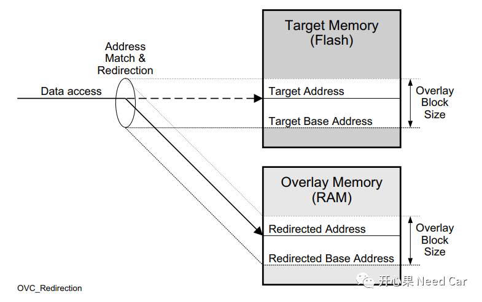
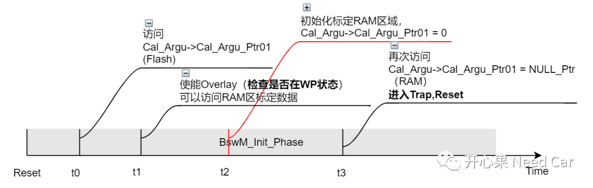
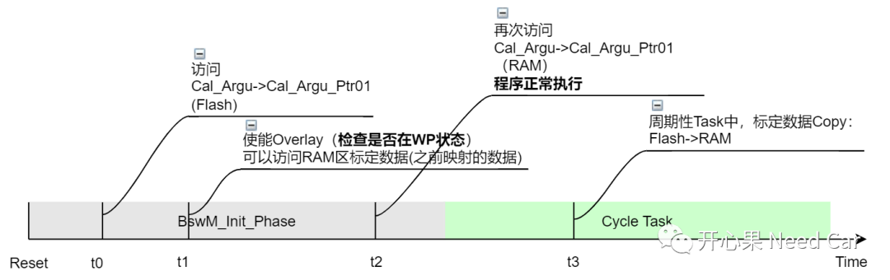
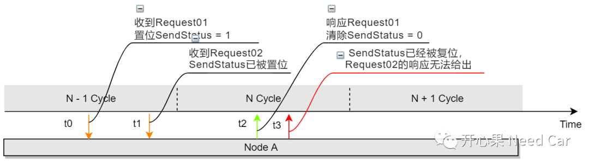

开心果 Need Car · 2022-05-09T08:39:00+08:00 · 微信原文
工程项目开发，各式各样的问题都会存在，对于开发人员来说，最烦的莫过于偶发问题。本文讨论一个工程偶发问题，更确切说是一个连环案。同样，该问题也是由空指针引发，致使程序跑飞。
1、问题描述
实车路测时，进行标定实验，标定切换到WP(Working Page)，程序异常（Trap_A），之后程序复位，程序复位过程中又连续复位（Trap_B）。
2、信息补充

对RAM中的数据标定完成以后，再将原有的FALSH区标定数据擦除，将标定好的RAM区数据刷写到对应的Flash区域，完成标定工作。
对于程序中的第一个异常（Trap_A），之前已经聊过，可以回顾前文Autosar开发：没有临界区保护，带来的后果很严重。
但是令我没想到的是：Trap_A异常导致程序复位，程序初始化过程中又引发了Trap_B，之后程序就不断地重复Reset。接下来主要聊一聊Trap_B异常的原因。
Trap_B异常解释
Step1：Trap_A引发程序复位；
Step2：t0时刻，程序访问标定量Cal_Argu->Cal_Argu_Ptr01，此时访问的是Flash区域的Cal_Argu->Cal_Argu_Ptr01，程序正常执行；

既然是手动代码初始化标定RAM区域引发的问题，解决策略也就简单的多：去掉不必要的手动代码部分，即：去掉标定RAM区域的初始化动作。之后程序运行的顺序如下：
t0时刻，访问Flash区域的标定量Cal_Argu->Cal_Argu_Ptr01，程序正常；
t1时刻，判断标定状态，如果在WP，访问RAM区域的标定量Cal_Argu->Cal_Argu_Ptr01，此时Cal_Argu->Cal_Argu_Ptr01数据是之前已经映射好的数据，即：Cal_Argu->Cal_Argu_Ptr01 != NULL_Ptr；
t2时刻，访问RAM区域的标定量Cal_Argu->Cal_Argu_Ptr01，程序正常。t0~t3的动作均在BswM的初始化中完成。
t3时刻，程序已经稳定运行，其中会有周期性Task处理标定数据的Copy动作，即：标定数据由标定Flash区拷贝到标定RAM区。程序运行时序如下所示：

Trap问题(一)补充
嵌入式开发笔记：空指针引起的Trap问题（一）一文中，漏了些小尾巴没有讨论透彻，这里再做一个补充：
t0时刻，Flexray的N - 1Cycle内，收到诊断请求Request01，同时置位SendStatus = 1;
t1时刻，Flexray的N - 1Cycle内，收到诊断请求Request02，此时SendStatus已经被置位（Request01和Request02共用同一个全局变量SendStatus记录发送处理状态）；
t2时刻，Flexray的N Cycle内，响应Request01，同时清除SendStatus状态，即：SendStatus = 0。
t3时刻，Flexray的N Cycle内，判断到SendStatus = 0，导致Request02响应无法给出。
上述流程如下所示：

调用FrArTp_Transmit()，将所有数据发送完成以后，FrTp立即将发送指针指空；
数据发送完成以后，FrTp处于Finshed状态，需要下一个Cycle切换到Idle状态，切换到Idle状态以后，对应Channel才释放。
往期精彩回顾